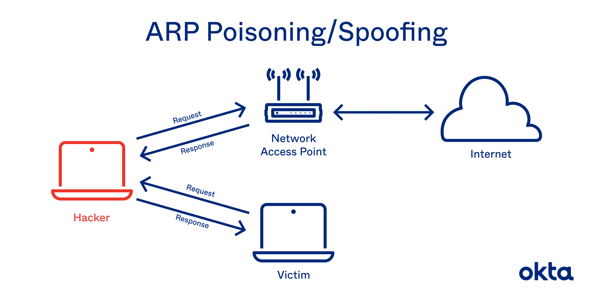

1) Nije mi jasno što se misli pod skeniranjem, skeniranje paketa u svrhe prisluškivajna kanala ili ili skeniranje otvorenih portova (tcp ili udp) na poslužitelju.
Ako se misli na prvo, rekao bih da je lakše skenirati TCP. On ima seq i ack brojeve u svojoj strukturi, pa se mogu poslužiti paketi po redu (u slučaju da ne idu dobrim redosljedom u mreži).
Ako se misli na drugo, onda je opet TCP jednostavniji. Skeniranje UDP portova da se provjeri koji su otvoreni je užasno sporo [1].
2) Razlika TCP SYN i TCP connect scana je da TCP connect napravi punu vezu. TCP SYN ne odgovori serveru i ne uspostavlja se ‘3 way hand shakea.’ Na slici [3] bi to značilo da se ACK ne pošalje serveru.
Skeniranje se može detektirati sa tcpdump alatom. Taj alati izbacuje sav tcp promet i potrebno je detektirati veliki broj otvorenih TCP veza sa jednog poslužitelja.
Sad, kako raspoznati tcp connect od tcp syn skeniranja, ne znam. Pokušao sam tcpdump-om oko 20 min skužit kako radi i nisam uspio vidjet razliku.
3) Čini se kao smurf attack [4]. ICMP zahtjev se šalje više puta i u source ide adresa poslužitelja koji se napada a u destination ide neka random adresa na mreži koja će slati odgovore poslužitelju [5].
4) IP spoofing je izrada IP protokol paketa koji imaju krivu izvorišnu IP adresu [6]. Ovo se može zlouporabiti tako što se osoba/uređaj prestavi kao neki drugi uređaj na mreži.
5) DDoS je distributed denial of service. Denial of service je napad u kojem napadač pokušava izcrpiti mrežne resurse nekom poslužitelju. Distributed DoS je ista stvar samo što napad dolazi sa više različitih uređaja i onda je teže blokirati taj napad. [7]
6) The primary role of the CA is to digitally sign and publish the public key bound to a given user. This is done using the CA’s own private key, so that trust in the user key relies on one’s trust in the validity of the CA’s key. [8]
7) Napadi na arp su svi bazinari oko istog pojma: ‘ARP spoofing, ARP cache poisoning, or ARP poison routing’ [9] - može se koristiti za Man in the middle napade, DoS, session hijacking [9]. S tim da ovaj session hijacking (koliko ja razumijem) ne bi trebao radit ukoliko poslužitelj i klijent koriste https odnosno ssl za ekripciju.
Razlog zašto je arp ranjiv je sam dizajn protokola i načina na koji radi. [9] Ako nije jasno pogledajte neki video na yt o arp spoofingu.
Jednostavna situacija. Spojeni ste na [10] mrežu. U jednom trenutku neki uređaj na mreži kaže vašem da je on ruter. Vi se spojite na njega i nastavljate komunikaciju. On u tom trenutku ima pristum svom prometu. Ovo se zove Man in the middle napad. On sad može uskratiti vezu odnosno blokirati promet podataka između vas i interneta i onda dolazi do DoS-a. Može prisluškivati vezu, npr http protokol i vidjeti podatke (ako nije https). Može ukrasti kolačiće i time se prijaviti kao vi na tu stranicu. Ovo također nije moguće ako je kolačić spremljen kao secure cookie. Secure cookie se ne šalje preko http protokola već samo preo https [11].
8) Ukratko, mreža koja stoji između lokalne i interneta u svrhe povećanja sigurnosti. Svrha tog je da se izvana stvari mogu spajati samo na stvari koje su u DMZ-u a pristup Internet -> lokalna mreža je blokiran preko firewalla. [12]
9) osnovni sigurnosni zahtjevi: Tajnost, raspoloživost, cjelovitost
Tajnost i integritet/cjelovitost: The encryption used by SSH is intended to provide confidentiality and integrity of data over an unsecured network, such as the Internet. [13]
Raspoloživost: ssh je uglavnom uvijek dostupan na portu 22. Sad ako se server fizički ugasi to je problem, i može biti narušena raspoloživost. Ona također može biti narušena ako netko ugasi ssh (sad, koliko je točno reći da je narušena raspoloživost ssh-a ako je on ugašen namjerno, ne znam). Ja bih rekao da raspoloživost nema veze sa ssh-om.
10.a)
iptables -A INPUT -i eth0 -p tcp --dport 443 -d 192.168.0.1 -m state --state NEW -j ACCEPT
10.b)
iptables -A INPUT -i eth1 --dport 22 -d 192.168.0.1 -s 10.10.1.20 -m state --state NEW -j ACCEPT
10.c)
Ova rečenica je malo čudna: ‘Je li dozvoljen pristup s firewalla na mail.google.com korištenjem protokola http kroz SSL/TLS?’
Firewall je program al valjda se u ovom slučaju misli na WEB poslužitelja. Nije mi jasno zašto su napisali ‘http kroz SSL/TLS’ kad su migli samo https, ako se mislilo na to.
Mislim da nije dopušteno. Po defaultu se svaki output paket dropa: :OUTPUT DROP [0:0], a pravilo -A OUTPUT -m state --state RELATED,ESTABLISHED -j ACCEPT ne obuhvaća NEW pakete tako da paketi uopće ne bi trebali izaći sa poslužitelja.
10.d)
iptables -A INPUT -i eth0 -s 10.0.1.0/24 -j DROP
10.e)
Nisam siguran za ovo ali mislim da će droppat, :INPUT DROP [0:0] je default pravilo ako nikoji drugi input filter ne bude primjenjen. A svi ostali inputi ne obuhvaćaju opisani pristup:
-A INPUT -i lo -j ACCEPT: interface je loopback, a ne eth0
-A INPUT -d 127.0.0.0/8 ! -i lo -j DROP: interface je loopback, a ne eth0
-A INPUT -m state --state RELATED,ESTABLISHED -j ACCEPT: nije NEW
-A INPUT -p tcp -m tcp --dport 80 -j ACCEPT: nije port 22
11) Sigurnosni zahtjevi: Tajnost, raspoloživost, cjelovitost
Tajnost i cjelovitost da, raspoloživost ne.
While the paper didn’t make a claim about Integrity, TLS together with the associated x509 certificate actually also fulfills the Integrity criteria, provided that you trust the CA system. Confidentiality in TLS is achieved by cryptographic signing and MAC of each packets transferred in the connection, which prevents data traveling through the connection from being altered without being noticed. [14]
12) Tipičan cilj je omogućavanje izvršavanja koda na klijentovom pregledniku. Nakon toga je uobičajeno krasti kolačiće ili povezati xss sa stvarima kao CSRF.
SOP blokira da kod sa x.com pristupi podatcima sa y.com (recimo da imate stranicu x.com koja loada JS datoteku sa y.com). Ako x.com spremi nešto osjetljivo i da nema SOP, kod (JS) sa y.com bi tome mogao pristupiti i ukrasti podatke. Ovo se ne čini kao veliki problem na prvu ali dosta JS koda se dohvaća preko CDN servisa i tako se izbjegava potreba da skidate i linkate te datoteke na svom serveru. Ako je datoteka linkana preko CDN-a i netko zarazi tu datoteku, podatci sa svih stranica koje učitavaju taj kod bi mogli biti kompromitirani.
13) id parametar nije “očišćen”, moguće je da se nalazi SQL injection unutra. Treba pogledati ako su parametri u id maliziozni i odbiti zahtjev ako je to slučaj.
14) Mogli smo doći do sažetka/hash-a lozinke. Taj hash inače ne bi mogli vratiti nazad u lozinku da je korišten salt i neki sporiji algoritam. U DVWA se koristi MD5 hash koji se ne preporuča za lozinke jer više nije siguran. [15]
[1] https://security.stackexchange.com/questions/120171/why-is-udp-port-scanning-slower-than-tcp-port-scanning
[2] https://security.stackexchange.com/questions/203263/tcp-scans-vs-syn-scans-in-port-scanning
[3] 
[4] https://en.wikipedia.org/wiki/Smurf_attack
[5] 
[6] https://en.wikipedia.org/wiki/IP_address_spoofing
[7] https://en.wikipedia.org/wiki/Denial-of-service_attack
[8] https://en.wikipedia.org/wiki/Public_key_infrastructure#Certificate_authoritiesa
[9] https://en.wikipedia.org/wiki/ARP_spoofing
[10] 
[11] https://en.wikipedia.org/wiki/Secure_cookie
[12] https://en.wikipedia.org/wiki/DMZ_(computing)
[13] https://en.wikipedia.org/wiki/Secure_Shell_Protocol
[14] https://security.stackexchange.com/questions/153792/does-https-provide-availability
[15] https://security.stackexchange.com/questions/19906/is-md5-considered-insecure